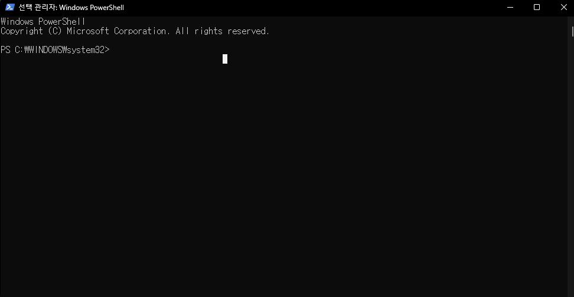

오디오 고급기능(Enhancements)이 안 보일 때
%EC%9D%B4%3C%2Ftext%3E%3Ctext%20x%3D%22200%22%20y%3D%22176%22%20font-family%3D%22Inter%2Csans-serif%22%20font-size%3D%2226%22%20font-weight%3D%22800%22%20fill%3D%22%231B64DA%22%20text-anchor%3D%22middle%22%3E%EC%95%88%20%EB%B3%B4%EC%9D%BC%20%EB%95%8C%3C%2Ftext%3E%3C%2Fsvg%3E)
혹시 FPS류 게임을 좋아하거나 이어폰 소리가 너무 작다고 느껴져서, 혹은 오디오 기능으로 저음 보강·음향 강도 이퀄라이제이션 기능을 사용하고 싶은데 기능이 안 보이거나, 메인보드를 바꿨거나, 포맷을 했거나 드라이버 업데이트를 했는데 기능이 안 보이게 되셨나요? 그렇다면 이 방법을 써보시면 도움이 될 거예요.
일단, 사용 중이신 메인보드의 제조사 사이트에서 해당 보드에 맞는 오디오 드라이버를 찾아서 미리 다운로드 받아둬야 한다는 걸 염두에 두시고 진행해주세요.
오디오 설정에서 "향상 기능(Enhancements)" 또는 "음향 효과" 탭이 아예 안 보이는 경우가 있습니다. 이럴 땐 오픈소스 스크립트로 라우드니스 이퀄라이제이션 기능을 직접 활성화할 수 있습니다. 명령어가 낯설어 보여도 그대로 복사·붙여넣기만 하면 되니 순서대로 따라오세요.

광고 영역 (in-article)
- 윈도우 하단 검색(돋보기) 버튼을 누르고 "Windows PowerShell" 입력
- 검색 결과에서 마우스 우클릭 → "관리자 권한으로 실행" 클릭
아래 3줄을 통째로 드래그해서 복사한 뒤, PowerShell 창에 붙여넣고 엔터를 누르세요 (클릭 한 번으로 전체 선택됩니다).
Invoke-WebRequest https://raw.githubusercontent.com/Falcosc/enable-loudness-equalisation/main/EnableLoudness.ps1 -OutFile $env:HOMEPATH\EnableLoudness.ps1 Set-ExecutionPolicy -ExecutionPolicy RemoteSigned -Scope CurrentUser . $env:HOMEPATH\EnableLoudness.ps1
- 실행 권한을 부여할지 물어보면 y 입력 후 엔터
- 이어서 사운드 장치 이름을 입력하라고 나오면, 본인이 쓰는 출력 장치 이름을 정확히 입력 후 엔터 (예: Realtek USB2.0 Audio) (경험상 대소문자, 띄어쓰기 지켜야 했던 것 같아요)
장치 이름은 설정 > 시스템 > 소리에서 현재 사용 중인 출력 장치 이름을 그대로 복사해서 쓰면 정확합니다.
FPS 게임이나 음악 감상용으로 이어폰을 사용하시는데, 적은 돈이라도 투자해볼 의향이 있으신 분이 계시다면 'DAC 꼬다리'라고 검색하셔서 1만 원 근처 제품을 사용해보시는 걸 추천합니다. 조금만 알아보셔서 괜찮은 칩이 들어간 걸로 사용해보세요. 아마 쓰기 전으로는 돌아가기 힘드실걸요?
광고 영역 (bottom)